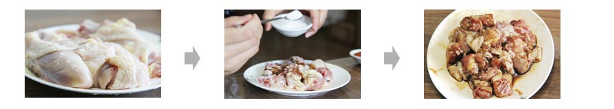
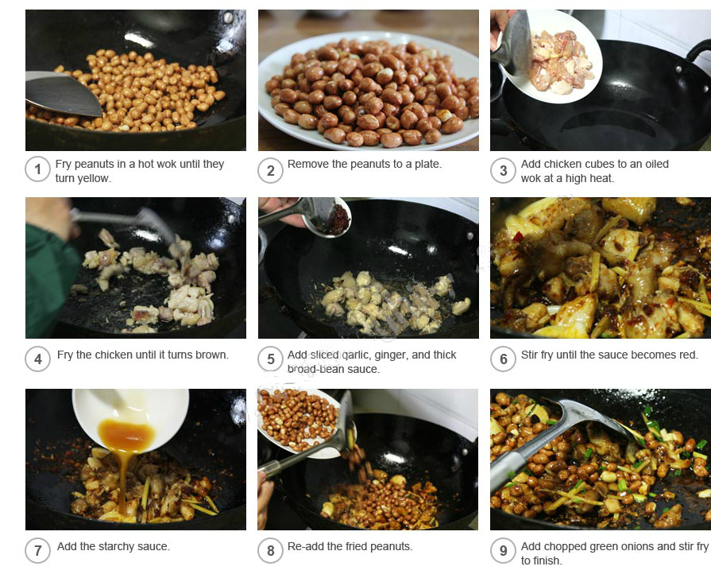

Kung Pao chicken is a famous Chinese dish made with diced chicken, chilies, and peanuts. In some Western countries, this world-famous dish is synonymous with Chinese cuisine.
1. Clean the chicken breasts and dice them.
2. Stir together the cooking wine, cooking starch, and salt, and marinated the chicken cubes in the mixture for half an hour.
3. Soak peanuts in hot water for 10 minutes and remove the peanut skins.
4. Clean the dried red chili peppers and cut them into small pieces. Clean and chop the green onions. Clean and dice the ginger and garlic.
5. Make a bowl of starchy sauce with the sugar, soy sauce, rice vinegar, and cooking wine.
1. Use a moderate amount of oil to fry the peanuts until they turn yellow, drain them, and set them on a plate to cool. Cool peanuts are crisper.
2. Using high heat, heat oil in a hot wok, then add the chicken cubes, and fry until they turn slightly brown. Drain them and remove them to a plate.
3. Leave some cooking oil in the wok, and using a high heat stir-fry the dried chilies for 30 seconds to release the spice.
4. Then re-add the fried chicken cubes and add the diced garlic and ginger, and the thick broad-bean sauce. Stir-fry until the sauce becomes red.
5. Add the starchy sauce and chopped green onions, and re-add the cool fried peanuts. Stir-fry together for 30 seconds.
6. Serve it on a plate.
